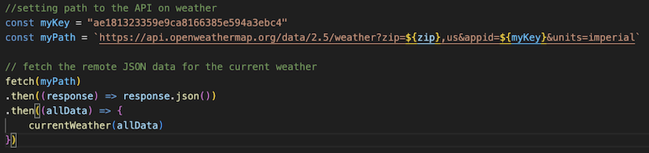
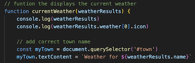
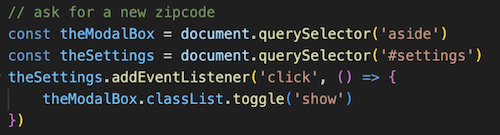
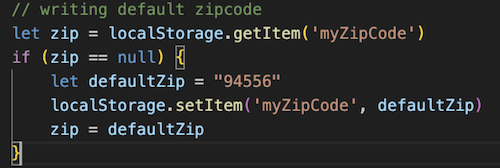
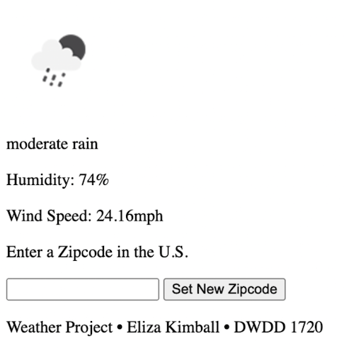

Unlocking the Power of JavaScript
JavaScript powers the interactive aspects of websites, and this skill was exactly what I needed when tasked with building a weather application where users can retrieve and display real-time data based on a zip code. My goal was to create a user-friendly interface that could fetch data from a weather API and update dynamically based on user input. The application features a clean design and intuitive controls, allowing users to effortlessly check the weather for different locations without any technical complexity.
Displaying Real-Time Weather Data
First, I needed to fetch remote JSON data for real-time weather updates. Before this project, my experience was limited to retrieving local data using JavaScript. I stored my API key in myKey and used template literals to construct myPath, dynamically embedding the zip code. Using fetch(), I retrieved weather data from the OpenWeatherMap API, converted it to JSON, and passed it to currentWeather() to update the UI.
The currentWeather() function extracts JSON data to display key weather details, including the city name, date, weather icon, and other relevant information. After successfully retrieving and displaying the data, I encountered several challenges.
Challenges
One of the first challenges I faced was allowing users to enter a new zip code dynamically. I decided to implement an interactive icon that, when clicked, would open a card where users could input a new zip code. Through trial and error, I successfully connected my JavaScript to my HTML, enabling seamless UI manipulation. By using querySelector() to target the modal and settings icon, I toggled the visibility of the input card with a simple event listener.
After implementing an event listener to update the zip code when the "Set New Zip Code" button was clicked, I realized I hadn’t accounted for a default zip code. Rather than hardcoding a default, I wanted a more user-friendly approach. This led me to explore local storage, allowing the application to remember the last zip code entered. By checking if a stored ZIP code exists, the script either retrieves the previous entry or sets a default value, ensuring a seamless user experience when revisiting the site.
User-Friendly Interface
This is the page after integrating HTML and JavaScript. While it successfully updates and reloads new data dynamically, the initial interface felt plain, unstructured, and unintuitive. To enhance usability, I applied CSS to introduce color, typography, and card-based layouts, making the design more visually appealing and user-friendly. The improved font selection enhances readability, while the carefully chosen colors create a calm and inviting user experience.
What I Would Do Differently
- Add a 7-day weather forecast display
- Improve screen responsiveness across screens
- Allow users to save multiple locations
Conclusion
Building this weather application was a transformative learning experience that deepened my understanding of JavaScript, API integration, and user interface design. Throughout the process, I faced challenges such as retrieving remote data, dynamically updating the UI, and enhancing user experience with CSS and local storage. Overcoming these obstacles not only strengthened my technical skills but also reinforced my ability to problem-solve and adapt. This project serves as a testament to my proficiency in leveraging web technologies to create interactive, user-friendly applications.